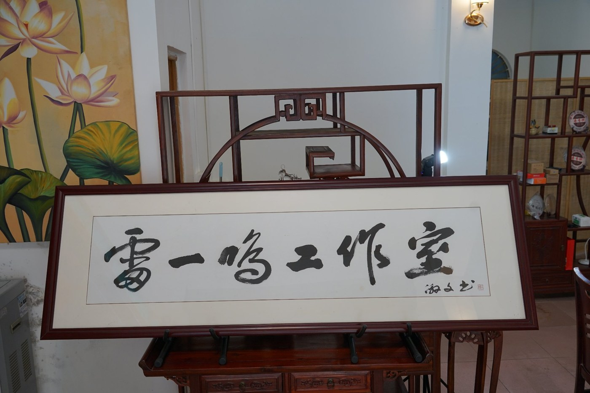

面向学生
成长需求理解思想与生活状态，回应成长困惑
雷一鸣工作室是以雷一鸣老师为主导，集教学、研究、指导和服务于一体的综合性工作平台，以引领大学生思想政治教育为切入点，陪伴青年学生全面成长。
工作室通过对大学生人生观、价值观、世界观的重新认识和重新构建，以线上与线下相结合的方式，从不同角度了解青年学生的困惑、迷茫以及核心能力的得失；在教书育人、管理育人、服务育人的模式下，帮助学生以更好的状态面对生活、面对自己、面对社会。
与此同时，工作室为改进大学生思想政治教育工作方式方法提供参考，也为辅导员同仁更好地服务学生、教育学生、管理学生、引领学生提供力所能及的帮助。

以引领大学生思想政治教育为切入点，帮助学生在教书育人、管理育人、服务育人的协同中，以更好的状态面对生活、面对自己、面对社会。
促进学生自我管理、自我教育、自我服务，推动辅导员队伍专业化、职业化、专家化，让育人经验在实践中不断沉淀与推广。
关注成长需求，尊重个体差异
创新思维与团队沟通
总结经验，反哺育人一线
三个环节共同承担育人责任，让价值塑造伴随学生成长的全过程。
在课堂与分享中启发思考
在日常关照中明确方向
在回应需求中传递温度
五个环节前后衔接，让指导有依据、实践有落点、经验可延续。
主动倾听，了解所思所想
第一步 · 倾听辨析困惑、迷茫与能力得失
第二步 · 理解按个体差异提供针对性帮助
第三步 · 引导在活动与实践中检验成长
第四步 · 践行沉淀方法，反哺育人工作
第五步 · 沉淀从一线实践到方法沉淀，从学生陪伴到同行交流，几个特点贯穿工作室的日常工作。
以思想政治教育为核心
学生与辅导员两端兼顾
六项素质与五步路径结合
线上平台与线下活动互补
把一线经验沉淀为方法
自 2016 年起持续建设
发展脉络按时间展开，每一项都对应着日常工作中的一个侧面。
九页图文简介，可直接保存到手机查看或转发。